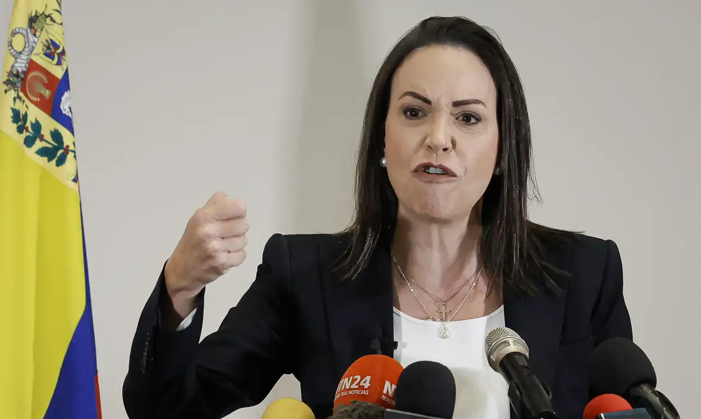

Conselho do Nobel cancela cortejo com tochas para Maria Corina Machado

O Conselho Norueguês da Paz anunciou neste sábado (25) que não fará o tradicional cortejo com tochas por Oslo no dia da entrega do Prémio Nobel da Paz dado à política venezuelana María Corina Machado. A instituição disse discordar desta escolha.
A entidade, que agrega 17 organizações pacifistas norueguesas e cerca de quinze mil ativistas, declarou ter tomado esta decisão porque os seus membros "não sentem que a laureada deste ano esteja alinhada com os valores fundamentais do Conselho de Paz norueguês e de seus membros".
"É uma decisão difícil, mas necessária. Temos um grande respeito pelo Comitê Nobel e pelo Prêmio da Paz como instituição, mas, como organização, temos de ser fiéis aos nossos princípios e ao amplo movimento pela paz que representamos. Esperamos celebrar novamente o prêmio nos próximos anos", indicou a presidente do Conselho da Paz norueguês, Eline H. Lorentzen, em comunicado.
"Alguns dos seus métodos não estão em consonância com os nossos princípios e valores e os das nossas organizações membros, como a promoção do diálogo e de métodos não-violentos", disse também Lorentzen ao diário norueguês VG.
A líder da oposição venezuelana, María Corina Machado, foi anunciada no dia 10 de outubro como a ganhadora do Nobel da Paz deste ano "pelo seu trabalho incansável na promoção dos direitos democráticos do povo venezuelano e pela sua luta para alcançar uma transição justa e pacífica da ditadura para a democracia" no país latino-americano, segundo a decisão do Comitê Nobel norueguês.
O chamado cortejo de tochas pelo centro de Oslo, até o hotel onde está alojado o vencedor do galardão, é um dos pontos altos do programa de cerimônias do Nobel da Paz, que é entregue em 10 de dezembro, embora não seja organizado pelo Instituto Nobel norueguês.
As suas origens remontam a 1954 e é tradicionalmente organizado pelo Conselho da Paz norueguês, uma das mais importantes entidades para o processo de pacificação neste país nórdico, embora já anteriormente tenha recusado essa responsabilidade, como em 2012, quando a União Europeia foi a vencedora.
A Aliança Norueguesa de Justiça Venezuelana, uma organização não-governamental (ONG) norueguesa que trabalha "pela liberdade, a democracia e os direitos humanos" na Venezuela, anunciou que assumirá a organização do cortejo deste ano.
O vencedor do Prêmio Nobel da Paz é escolhido pelo Comitê Nobel norueguês, composto por cinco pessoas nomeadas pelo parlamento da Noruega a cada seis anos, de acordo com a correlação de poder naquela câmara.
A escolha de Machado foi apoiada pelos principais partidos políticos noruegueses, embora dois dos aliados externos do Governo trabalhista, o Partido da Esquerda Socialista (o quarto maior) e o Partido Vermelho (o sexto maior), tenham se mostrado críticos.
O Instituto Nobel norueguês ainda não anunciou se María Corina Machado, que vive na clandestinidade na Venezuela, por motivos de segurança, poderá viajar para Oslo para receber o prêmio.